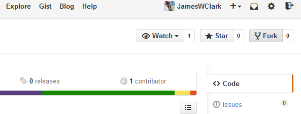
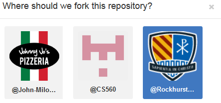
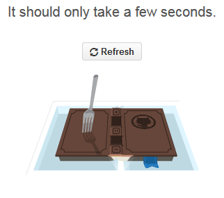

Forking in Github is simple. Visit any Github repository, such as the one I used during camp and click the Fork button.
If you are asked where to fork, choose your profile.
It should take a while.
Finally, the respotory is copied into your collection.